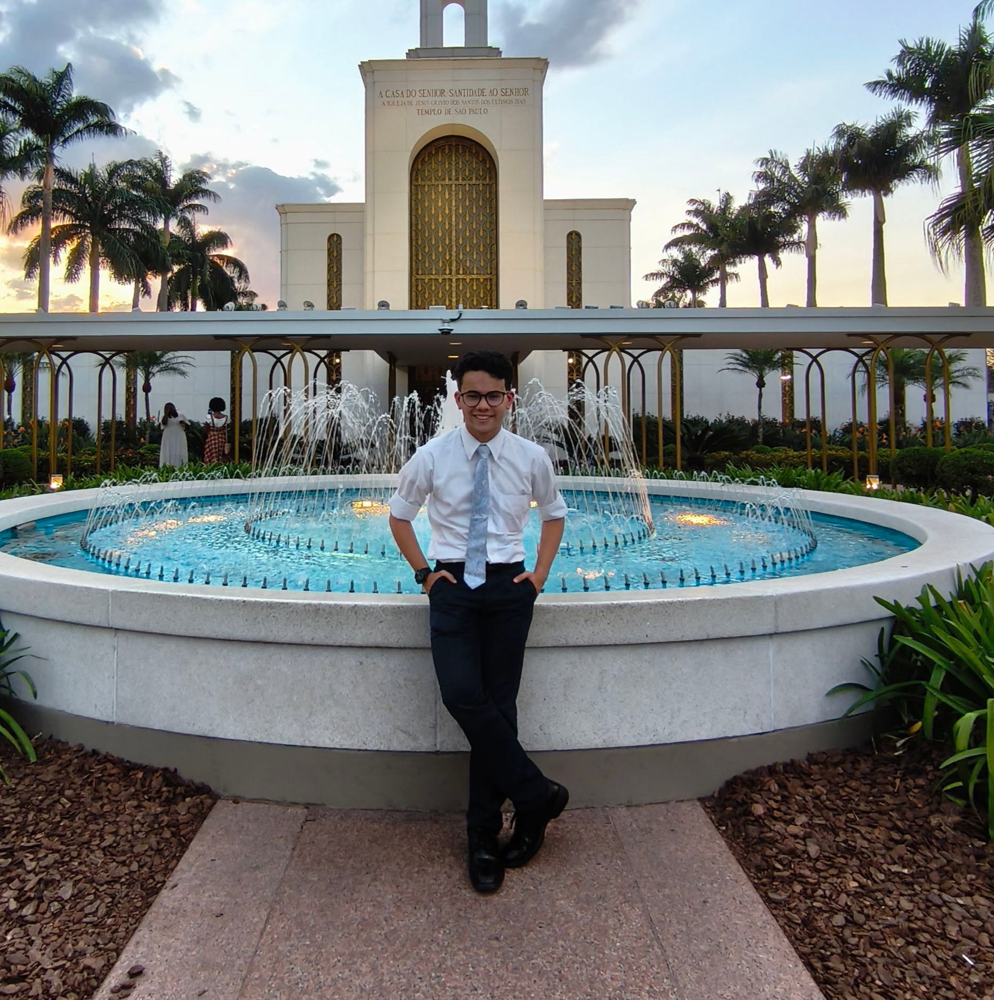

Moroni Oliveira | WDD 130

Hello! My name is Moroni Oliveira and I am from São Paulo, Brazil. I am a big fan of japanese culture, I served my mission there and I love japanese manga and anime. I am pursuing my carrer as a Software Engineer in BYU. I am always open to new challenges and studying Software Engineer in English has been difficult and rewarding. I have an amazing family of 6 people who always supports me. I am excited to see what I can do with I really try my best, and I believe that God always helps us.